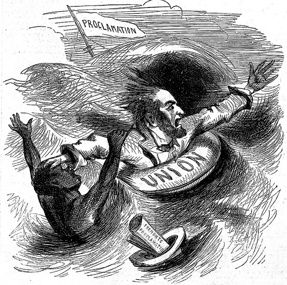
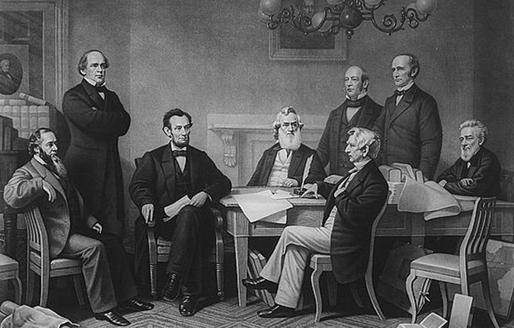
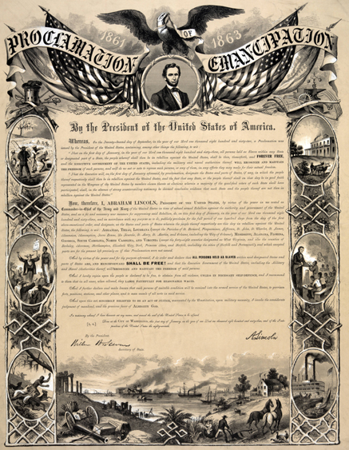

|
Lincoln's decision to emancipate the slaves was the
culmination of more than a year of movement toward
emancipation. The first step was taken less than two months
after the war had started on May 22, 1861, when a force
under Benjamin Butler invaded eastern Virginia and
established a base at Fort Monroe. Within a few days, many
slaves from local plantations had flocked to Fort Monroe.
This left Butler in a difficult quandary. It had been made
clear that the war was, at the time, being fought solely to
return the states to the Union, not to liberate the slaves.
On the other hand, he did not want to return them. So he hit
upon a solution. He labeled them contrabands, which didn't
commit to their freedom, while at the same time making clear
that they would not be returned to their owners, since
contraband is captured property. The term was so appealing
that it became the official policy of the Lincoln
administration.
Frémont Oversteps his Bounds
Lincoln allowed Butler's decision to stand, for it deftly
avoided the issue of emancipation. Under enormous pressure
from Congressional Republicans, he also signed the
Confiscation Act of 1861, which provided that slaves
|

Lincoln's decision to override Frémont was unpopular with many
Northerners. This cartoon showing President Lincoln pushing a slave underwater to drown
was published in September of 1861 with the caption, "Sorry Sambo, there's only room for
one of us."
|
employed in the service of the Confederate armies could be
seized. As Lincoln soon demonstrated, however, this was as
far as he was willing to go at so early a point in the war.
In August of 1861, General John C. Frémont, commander of
the Department of the West, was trying to defeat a
Confederate invasion in Southwest Missouri and to end
widespread guerrilla warfare elsewhere in the state. Frémont
declared martial law in all of Missouri, and announced that
civilians bearing arms would be tried by court martial and
executed if convicted. He also stipulated that the slaves of
persons aiding the rebellion would be confiscated. Lincoln
reacted badly, and forced Frémont to modify his edict to
conform to the terms of the Confiscation Act, and to go no
further. Frémont's action, undertaken without consulting
Washington, was unacceptable to Lincoln for a variety of
reasons. First, it violated the pledge Lincoln had made in
his inaugural address to not interfere with slavery and it
also contradicted his frequently stated position that the
only aim that his administration had in the Civil War was
restoration of the Union. Additionally, it placed military
authority above civilian authority, which Lincoln found
unacceptable. Most significant, however, was that Frémont
was proceeding far more quickly than the President thought
prudent.
The President's Concerns
In addition to his naturally cautious nature, Lincoln had
a variety of reasons for moving slowly toward emancipation.
Of primary importance was that he wanted to keep the border
states from leaving the Union and joining the Confederacy.
Additionally, Lincoln was concerned with the effect
emancipation would have on the war effort, both among
soldiers and on the home front. He feared that Northerners
would be unwilling to fight a war of emancipation, while
Southern resolve would be strengthened by the belief that
they were fighting to save slavery.
On the other hand, Lincoln knew he also had to keep
moving steadily toward emancipation. He needed to keep
Britain from recognizing the Confederacy, and since
anti-slavery sentiment was strong there, an emancipation
proclamation was a major means of achieving that goal.
Further, he was under considerable pressure from the members
of his party, especially the Radical Republicans, to do
something about the slavery issue. Finally, Lincoln believed
personally that slavery was morally wrong, and that it was a
threat to the survival of the nation.
Lincoln Asks for Compensated Emancipation
Still committed to his pledge not to interfere with
slavery, Lincoln continued through the first part of 1862 to
urge states to adopt a plan of gradual, compensated
emancipation. He also continued to overrule generals who
tried to pursue their own agendas. In May, General David
Hunter, military commander of the Department of the South,
announced that all slaves in Florida, Georgia and South
Carolina were "forever free". Lincoln immediately cancelled
Hunter's order. Yet, at the same time, Lincoln was moving
closer to freeing all the slaves by presidential decree. On
June 18, Lincoln began to prepare a draft of the
Emancipation Proclamation. He spent more than a month
writing the proclamation a few sentences at a time. At the
same time, he would debate emancipation with all the
abolitionists that came to call on him in the White House,
so as to test and refine his own arguments in favor of the
measure.
Lincoln realized that the Emancipation Proclamation would
be very difficult politically. So, on July 12, he summoned
the Congressmen from the border states, and again pushed
them to commit to gradual emancipation, warning them that if
they did not take action his hand might be forced. Lincoln
undoubtedly knew the congressmen would reject the plan,
which they did. Clearly then, the meeting was just a
contrivance to allow him to claim that every alternative
other than an emancipation proclamation by the president had
been tried and had failed.
The Second Confiscation Act
By July 18, the President was ready to take another step
forward. McClellan's defeats on the Peninsula contributed to
his decision, as did the demoralization of the soldiers in
the Army of the Potomac and the near mutinous state of some
of their officers. So, too, did the growing chorus of
antislavery opinion in the North and the dwindling trickle
of volunteers for the army„a flow that Governor Andrew of
Massachusetts bluntly told the President could not be
increased so long as he persisted in fighting a war that
would leave slavery intact. Especially influential was the
passage on July 17, 1862, by Congress, with virtually
unanimous Republican support, of the Second Confiscation
Act, a measure that defined the rebels as traitors and
ordered the confiscation of their property, including the
freeing of their slaves. Lincoln had serious doubts about
many of the provisions of the Confiscation Act and drafted a
message vetoing it, reminding Congress that "the severest
justice may not always be the best policy." Only after
Senator William Pitt Fessenden, working closely with the
President, secured modification of some of the more
stringent provisions did Lincoln agree to sign it. Lincoln
was concerned that the passage freeing the slaves was
unconstitutional; that they could only be freed by
constitutional amendment or by a president exercising his
war powers. However, the support the bill received convinced
Lincoln that emancipation could no longer be avoided, so he
decided to resolve the issue by acting before the bill could
take effect.
Lincoln Meets with his Cabinet
Lincoln had discussed the proclamation with a few of his
cabinet secretaries, notably William Seward, around the time
he began writing it in June of 1862. He brought it before
the full cabinet for the first time on July 22. "The
|

This popular image dramatizes the
cabinet meeting where Lincoln first read the
Emancipation Proclamation.
|
President was reading a book and hardly noticed me as I came
in," Secretary of War Edwin Stanton wrote later. "Finally he
turned to us and said: 'Gentlemen, did you ever read
anything of Artemus Ward? Let me read a chapter that is very
funny.'" Lincoln then read aloud something by humorist Ward
entitled "A High Handed Outrage at Utica." Furious at what
he regarded as "buffoonery" on Lincoln's part, Stanton
almost got up and left. But Lincoln read on until the end of
the piece and then laughed heartily. Everyone else was
silent. "Gentlemen," said Lincoln disappointedly, "why don't
you laugh? With the fearful strain that is upon me night and
day, if I did not laugh I should die, and you need this
medicine as much as I do." Then he reached into his tall hat
on the table, took out a paper, and said: "I have called you
here upon very important business. I have prepared a little
paper of much significance. I have said nothing to anyone,
but I have made a promise to myself and to my Maker. I am
now going to fulfill that promise." He read in a clear
voice: "On the first of January in the year of our Lord,
1863, all persons then held as slaves in any state or
designated part of a state the people whereof shall then be
in rebellion against the United States, shall be then, and
thenceforth and forever free." Stanton was overwhelmed. He
got up, took Lincoln's hand, and said, "Mr. President, if
reading a chapter of Artemus Ward is a prelude to such a
deed as this, the book should be filed among the archives of
the nation and the author canonized!"
The document was worded in an awkward fashion, as it
tried to leave open the possibility of compensated
emancipation. The cabinet, with the exception of Caleb B.
Smith, was generally supportive. Seward, however, expressed
his reservation that issuing the proclamation at such a low
point in the Northern war effort would appear to be an act
of desperation. Reluctantly, Lincoln agreed to wait.
In the interim, Lincoln began to prepare public opinion
for a proclamation of freedom, if one was to be issued.
Since one of the main arguments against emancipation was
that blacks and whites would not be able to live together,
he proposed a plan for colonization, wherein the federal
government aid the establishment of a colony for former
slaves in Central America. The proposal was emphatically
rejected by black spokesmen and white antislavery leaders.
Once again, Lincoln anticipated that his plan would be
rejected, and his motive was clearly to make emancipation
more palatable to Northerners by demonstrating that it was
the only feasible option.
At the same time, Lincoln began to develop his position
that emancipation was a militarily necessary measure, and
that he was taking the step for that reason. In a famous
reply to an editorial by Horace Greeley, the President wrote
"My paramount object in this struggle is to save the Union,
and is not either to save or destroy slavery. If I could
save the Union without freeing any slave I would do it; and
if I could save it by freeing all the slaves I would do it;
and if I could save it by freeing some and leaving the
others alone I would also do that. What I do about slavery,
and the colored race, I do because it helps to save the
Union; and what I forbear, I forbear because I do not
believe it would help to save the Union." The editorial was
republished throughout the country, and was widely praised.
The Proclamation is Issued
Meanwhile, the proclamation lay locked in a drawer. Every
now and then Lincoln took it out and touched it up, all the
while waiting for a victory. But victory did not come.
McClellan's army was stuck on the Peninsula, with its
commander unwilling to retreat or move forward. Pope's army
was defeated repeatedly in Virginia. Finally, on September
17, 1862, McClellan won a victory at Antietam. It was not
the stunning victory Lincoln had hoped for, but it was
enough.
|

Prints of the Emancipation Proclamation
were a popular item in the North in the early months of 1863.
|
The document was published shortly thereafter, and though
the proclamation aroused a good deal of opposition, most
Northerners supported the measure and many were overjoyed.
Several times, groups showed up at the White House to
serenade the President and the Proclamation. Lincoln, for
his part, was careful to make clear that the Proclamation
was only preliminary and that any states who chose to return
to the Union would be able to retain slavery. This was again
a shrewd political move, it put the burden of guilt on the
South and it also gave Lincoln time to propose compensated
emancipation to Congress one last time, which he did in
December. The proposal was once again rejected.
At noon on January 1, 1863, the final Proclamation was
taken to Lincoln. As it lay before him, he twice picked up
his pen and then put it down. Turning to Secretary of State
Seward, he said, "I have been shaking hands since nine
o'clock this morning, and my right arm is almost paralyzed.
If my name ever goes into history, it will be for this act,
and my whole soul is in it. If my hand trembles when I sign
the Proclamation, all who examine the document hereafter
will say, 'He hesitated.'" He then took up the pen again and
slowly and firmly wrote, "Abraham Lincoln."
The Emancipation Proclamation did not immediately free
any slaves. It applied only to states that were not part of
the Union, and therefore not subject to Lincoln's authority.
Its only immediate impact, albeit a significant one, was
that it formally allowed for the enlistment of
African-American troops, starting with the Massachusetts
54th Infantry Regiment. Nonetheless, the Proclamation marked
the death knell for slavery in the United States. From that
point forward, Union and Emancipation were inseparably
connected, and when the war did end, four million slaves
immediately received their freedom, based solely on the
President's decree. Slavery was officially outlawed on
December 6, 1865, when the thirteenth amendment to the
Constitution was ratified.
Some time after the proclamation had been issued, Lincoln
told Francis B. Carpenter, the artist who painted a picture
commemorating the event, that he regarded the Emancipation
Proclamation as "the central act of my administration, and
the great event of the nineteenth century." When Colonel
McKaye of New York reported that he had found enormous
affection for Lincoln among freedmen on the coast of North
Carolina, the President was deeply moved. "It is a momentous
thing," he told McKaye, "to be the instrument, under
Providence, of the liberation of a race."
Source: Christopher Bates for the History 139A website
|